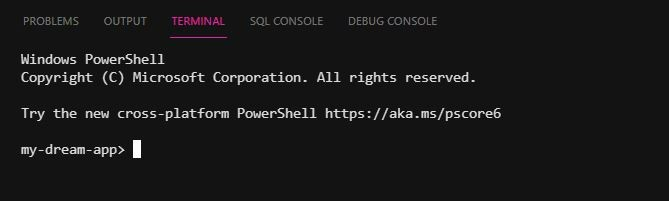

Krista-Mari Katajisto
Java21S
Opiskelijatunnus s2100636
Portfolio
Angular Projektit
- Hello CLI
- Angular ja Bootstrap
- Success ja Warning
- Sovella Databindingia
- My Dream App
- Build your first Angular App
- My Dream App -part 2
- Sovella Angular Directive
- 
- Angular Tour of Heroes
- Tuoteluettelo
- Angular Debugging
- Kahvila - Splitting Apps to Components
- Angular for Beginners & (versionhallinta GitHubissa)
- Angular Deep Dive for Beginners & (versionhallinta GitHubissa)
- Angular Tutorial MyStore osa 1
- Angular Tutorial NG MyStore osa 2